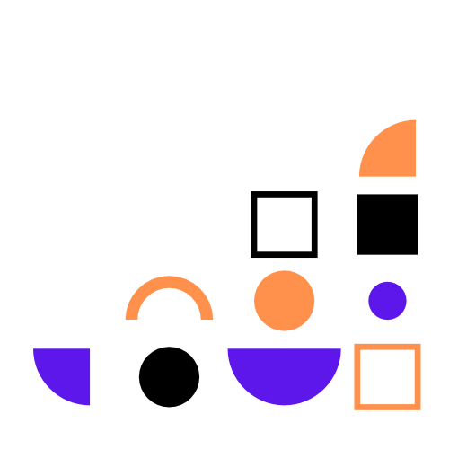

Jsem grafička se zaměřením na vizuální komunikaci a moderní technologie. Grafický design je pro mě nejen profesní směr, kterému se chci věnovat, ale také dlouhodobý koníček. Ráda hledám kreativní řešení a baví mě prozkoumávat kombinaci grafického designu a marketingu. Chci se pořád učit novým věcem a hledám příležitosti, kde bych mohla dále posouvat své dovednosti.

Kompletní návrh a realizace webu pro beauty salon nabízející manikúru, pedikúru a kosmetické služby. Hlavním cílem bylo vytvořit online prezentaci, která jasně představuje služby i tým salonu a zároveň přirozeně vede uživatele k rezervaci termínu. Vizuální styl je čistý a elegantní, s důrazem na přehlednost a optimalizaci pro mobilní zařízení.

Návrh vizuálního stylu a šablon pro instagramovou kampaň představující limitovanou vánoční edici kávy. Hlavním cílem bylo vytvořit atraktivní a konzistentní posty, které na sociálních sítích okamžitě zaujmou a navodí sváteční atmosféru. Design kombinuje moderní kompozici s tradičními zimními motivy a elegantní typografií.


Kompletní konceptuální návrh vizuální identity pro značku přírodní kosmetiky. Hlavním cílem bylo vytvořit ucelený branding, který zrcadlí čistotu, udržitelnost a organický původ produktů. Vizuální styl sází na jemné zemité tóny, minimalistickou typografii a čisté linie.


Návrh vizuální identity pro fiktivní cestovní značku zaměřenou na cestování a dobrodružství. Projekt vznikl jako součást závěrečných zkoušek na střední škole. Cílem bylo vytvořit ucelený vizuální systém, který značku jasně definuje a funguje napříč různými výstupy.

Návrh vizuálního stylu a layoutu časopisu zaměřeného na kybernetickou bezpečnost. Hlavním cílem bylo vytvořit moderní a přehlednou tiskovinu, která srozumitelně komunikuje témata ochrany dat a bezpečnosti na internetu.

Návrh a příprava pro tisk reklamních roll-upů a letáku pro prodejce vozů Dodge a RAM. Hlavním cílem bylo vytvořit dynamickou prezentaci s důrazem na prémiovost značek. Konceptuálním detailem je ohraničení produktových fotografií, které svým tvarem kopíruje boční okénka automobilů. Vizuální styl sází na tmavé pozadí a čistou typografii.
Ráda se zapojím
Kontaktovat